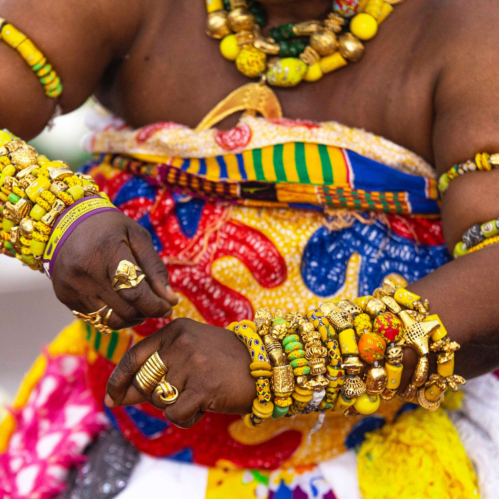
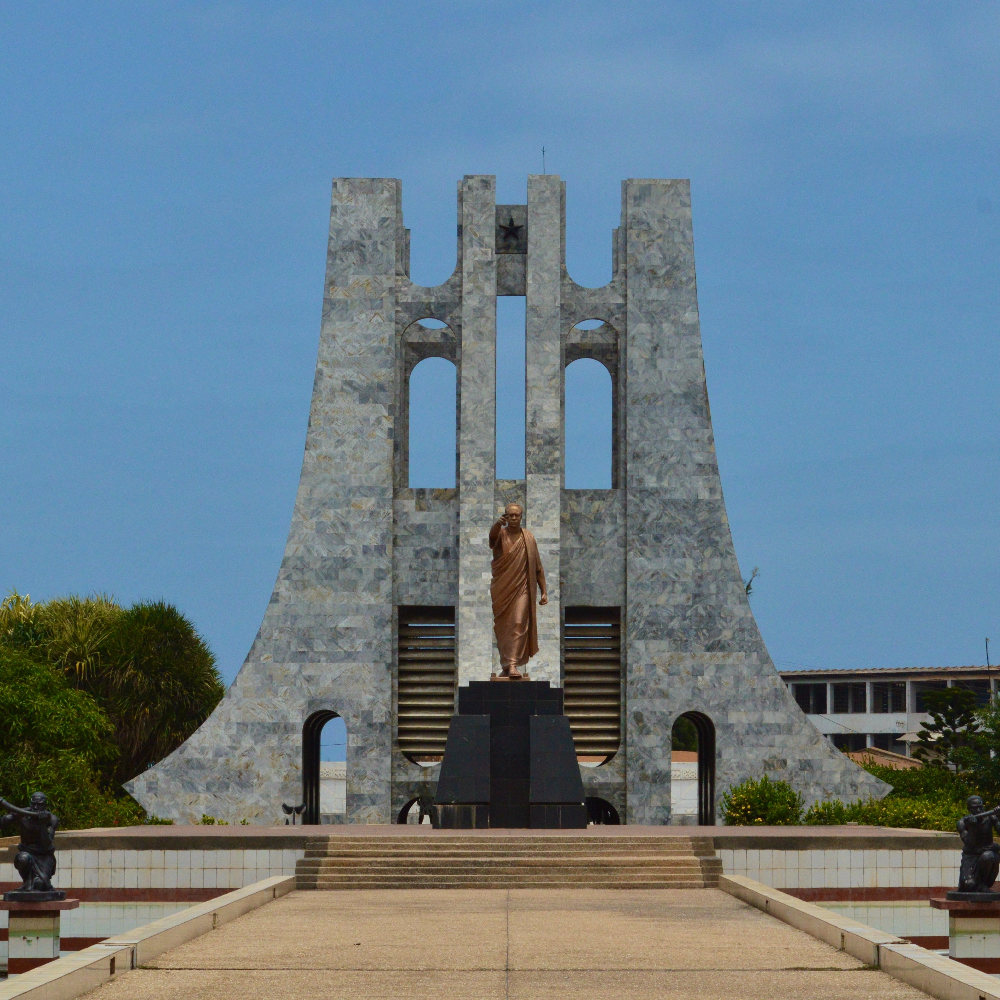

.jpg)
Ghana
From Accra's Bustling Markets to the History of Elmina Castle
My Ghanaian adventure began in Accra, the bustling capital that seamlessly blends tradition and modernity. The lively streets of Makola Market were a sensory delight, with colorful textiles, aromatic spices, and the rhythmic beat of traditional drummers filling the air. Exploring Jamestown, the historic neighborhood, I discovered vivid murals and an intriguing blend of colonial architecture and vibrant street art. In Accra, I immersed myself in the art of kente cloth weaving, learning about the intricate patterns and symbolism that make each piece unique. Weaving alongside local artisans, I gained a newfound appreciation for this iconic Ghanaian art form.
 My journey led me to Cape Coast, a coastal city steeped in history. The haunting corridors of Elmina Castle and Cape Coast Castle bore witness to the harrowing transatlantic slave trade. Walking through the dungeons where enslaved Africans were held captive, I felt a profound sense of sorrow and resilience. In Cape Coast, I attended a traditional Adowa dance performance, a celebration of Ghana's Asante culture. The graceful movements and rhythmic drumming conveyed stories of bravery and cultural pride, serving as a reminder of Ghana's rich heritage.
Continuing inland, I arrived in Kumasi, the vibrant capital of the Ashanti Region. The Manhyia Palace Museum offered a glimpse into the grandeur of the Ashanti kings, with regal artifacts and historical exhibits. I marveled at the intricate gold jewelry, a testament to the Ashanti's renowned craftsmanship. In Kumasi, I had the privilege of partaking in a traditional Ashanti naming ceremony. Adorned in colorful kente cloth, I received a unique Ashanti name, which was a memorable honor bestowed by the local community.
Venturing to the north, I explored Mole National Park, Ghana's largest wildlife reserve. Game drives through the savannas allowed me to spot majestic elephants, antelopes, and a diverse array of bird species. The park's serene landscape provided a stark contrast to the vibrant cityscapes I had previously encountered. In Mole, I joined a guided nature walk led by a local ranger, gaining insights into the park's ecosystem and wildlife conservation efforts. Witnessing the harmony of nature in this remote part of Ghana was a humbling experience.
 My journey continued to Kakum National Park, where lush rainforests and diverse flora and fauna awaited. The highlight of my visit was the thrilling canopy walk, a series of suspension bridges high above the forest floor. The walk provided a bird's-eye view of the forest canopy, and the sounds of wildlife echoed through the treetops. In Kakum, I participated in a traditional Akan drumming and dance workshop. Learning the rhythms and movements of this vibrant art form was a joyous celebration of Ghana's cultural diversity.
As I reflect on my journey through Ghana, I am deeply moved by the country's rich history, vibrant culture, and stunning natural beauty. From the bustling markets of Accra to the solemn history of Cape Coast, from the regal traditions of Kumasi to the wild wonders of Mole and Kakum, Ghana is a tapestry of experiences waiting to be explored.
Join me in my future travels as I continue to uncover the hidden gems of Africa and beyond. Until next time, keep your wanderlust alive and your heart open to the wonders of the world.